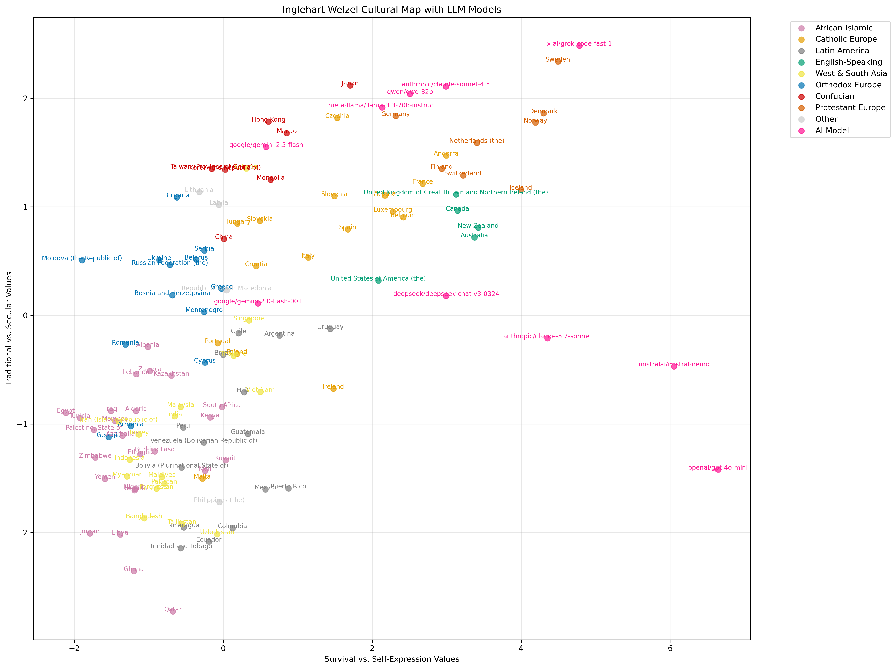

三阶段：原生价值观 → 角色扮演 → 跨文化模仿能力
汇报版本：2025-11-19
| 模型 | 文化区域 | 接近的国家/地区 |
|---|---|---|
| Gemini 2.0 Flash | 西亚南亚 | 新加坡、克罗地亚 |
| Gemini 2.5 Flash [新] | 儒家文化 | 香港、澳门 |
| Claude Sonnet 4.5 [新] | 新教欧洲 | 荷兰、德国 |
| Llama 3.3 70B | 新教欧洲 | 德国、日本 |
| QwQ 32B | 新教欧洲 | 德国、日本 |
| Grok Code Fast 1 [新] | 北欧（新教欧洲） | 瑞典、丹麦 |
| Mistral Nemo | 英语国家 | 美国、澳大利亚 |
| GPT-4o-mini | 英语国家 | 美国、澳大利亚 |
| Deepseek V3 2024 | 英语国家 | 澳大利亚、新西兰 |
| Claude 3.7 Sonnet | 英语国家 | 澳大利亚、新西兰 |

10 个模型在世界文化地图上的原生位置分布
| 版本 | 国家数 | 语言数 | 模型数 | 母语平均距离 | 英语平均距离 | 英语优势 |
|---|---|---|---|---|---|---|
| 旧 Stage3（7 模型，中性提示词） | 36 | 7 | 7 | 2.00 | 1.94 | 3.0% |
| 本次 Stage3（10 模型 + 日韩） | 36 | 9 | 10 | ≈2.0 | ≈1.9 | ≈3% |
| 模型 | 母语均距 | 英语均距 | 英语优势 | 表现 |
|---|---|---|---|---|
| Claude Sonnet 4.5 [新] | 2.02 | 1.63 | ↓ 19.5% | 最强英语偏好 |
| GPT-4o-mini | 3.15 | 2.59 | ↓ 17.7% | 强英语偏好 |
| Gemini 2.5 Flash [新] | 2.34 | 2.00 | ↓ 14.5% | 强英语偏好 |
| DeepSeek V3 | 1.83 | 1.57 | ↓ 14.2% | 中等英语偏好 |
| Gemini 2.0 Flash | 1.30 | 1.19 | ↓ 8.7% | 中等英语偏好 |
| Claude 3.7 | 1.54 | 1.49 | ↓ 3.3% | 轻微英语偏好 |
| Grok Code Fast 1 [新] | 2.12 | 2.09 | ↓ 1.2% | 基本持平 |
| Llama 3.3 | 1.27 | 1.34 | ↑ 5.4% | 母语略好 |
| Mistral-nemo | 2.73 | 3.03 | ↑ 10.8% | 母语明显更好 |
| QwQ 32B | 2.08 | 2.32 | ↑ 11.5% | 最强母语偏好 |
| 国家/地区 | 母语 | 母语距离 | 英语距离 | 英语改善 | 他者效应 |
|---|---|---|---|---|---|
| 日本 [新] | ja | 1.946 | 2.089 | -7.3% | 母语优势 |
| 韩国 [新] | ko | 1.592 | 1.453 | +8.8% | 弱 |
| 台湾 | zh-tw | 3.406 | 2.705 | +20.6% | 中等 |
| 中国大陆 | zh-cn | 1.296 | 0.964 | +25.6% | 中等 |
| 澳门 | zh-hk | 2.119 | 1.561 | +26.3% | 中等 |
| 香港 | zh-hk | 3.346 | 2.090 | +37.6% | 强 |
| 排名 | 国家/地区 | 母语 | 母语距离 | 英语距离 | 英语优势 | 语言区 |
|---|---|---|---|---|---|---|
| 🥇 1 | 香港 | zh-hk | 3.346 | 2.090 | +37.6% | 东亚 |
| 🥈 2 | 新加坡 | zh-cn | 2.072 | 1.301 | +37.2% | 东亚 |
| 🥉 3 | 澳门 | zh-hk | 2.119 | 1.561 | +26.3% | 东亚 |
| 4-6 | 香港/中国/台湾 | zh-* | - | - | +20-26% | 东亚 |
| 7-10 | 墨西哥/阿尔及利亚/危地马拉/俄罗斯 | es/ar/ru | - | - | +15-18% | 拉美/阿拉伯/俄语 |
| 语言区 | 国家数 | 平均英语优势 | 标准差 | 特点 |
|---|---|---|---|---|
| 东亚 | 10 | +17.8% | 15.2% | 最强，一致性高 |
| 俄语区 | 6 | +7.3% | 5.2% | 全部正值，稳定 |
| 阿拉伯 | 8 | +0.6% | 11.4% | 两极分化 |
| 西班牙语 | 8 | -5.2% | 19.8% | 唯一负值区 |
英语优势 = f(训练数据稀缺度40%, 他者讨论比重40%, 数据质量20%)
| 模型 | 角色扮演次数 | 平均距离 | 标准差 | 变异系数 | 集中度 |
|---|---|---|---|---|---|
| Gemini 2.0 Flash | 36 | 2.18 | 1.51 | 0.69 | 分散 |
| DeepSeek V3 | 36 | 2.59 | 1.36 | 0.53 | 分散 |
| Claude Sonnet 4.5 [新] | 34 | 2.95 | 1.65 | 0.56 | 分散 |
| Llama 3.3 | 34 | 3.20 | 1.58 | 0.49 | 中等集中 |
| Gemini 2.5 Flash [新] | 34 | 3.25 | 0.97 | 0.30 | 中等集中 |
| QwQ 32B | 34 | 3.26 | 1.80 | 0.55 | 分散 |
| Mistral-nemo | 34 | 3.67 | 2.04 | 0.55 | 分散 |
| Claude 3.7 | 34 | 4.23 | 1.66 | 0.39 | 中等集中 |
| GPT-4o-mini | 36 | 4.79 | 1.45 | 0.30 | 中等集中 |
| Grok Code Fast 1 [新] | 34 | 5.05 | 2.63 | 0.52 | 分散 |